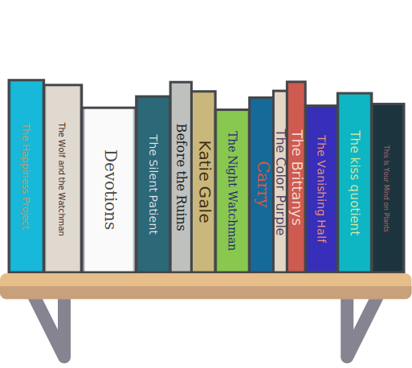

2022-05-24
Even though my Spine Generator project is done to death, I was inspired to redo the data/backend ONE MORE TIME when I realized I actually was able to grab my book data from Open Library via API. While I was working on it, I also decided to give it a little facelift by grabbing cover colors from the get-image-colors library rather than Vibrant.js which was just not designed to do what I wanted it to.
And since I got that looking significantly prettier, I also added some futzing around with random fonts and properly centering the text on the books (as opposed to the strange hack I had before 😅) so that titles don’t run off the edge of the books… usually.

Check it out here!
Writing about how excited I am about Open Library got me poking around the Open Library APIs a bit more until I realized it’s totally possible for me to grab my lists of currently reading, read, and want to read books, as long as I keep those lists public on my profile.
It’s not documented super well, but reading the “fine print”…
More APIs
Did you know, nearly every page on Open Library is or has an API. You can return structured bibliographic data for any page by adding a .rdf/.json/.yml extension to the end of any Open Library identifier. For instance: https://openlibrary.org/works/OL15626917W.json or https://openlibrary.org/authors/OL33421A.json. Many pages, such as the Books, Authors, and Lists, will include links to their RDF and JSON formats.
I started to wonder if the lists under my
profile page might be included in the “nearly every page” that has
an API… It was easy enough to check, I was able to do a quick
curl to the url and bam:
curl -s -H 'Accept: application/json' 'https://openlibrary.org/people/stinkerelly/books/currently-reading.json'{"page": 1, "reading_log_entries": [{"work": {"title": "The Happiness Project", "key": "/works/OL15833228W", "author_keys": ["/authors/OL2747599A"], "author_names": ["Gretchen Rubin"], "first_publish_year": 2011, "lending_edition_s": "OL24743543M", "edition_key": ["OL32162737M", "OL24743543M", "OL32162738M", "OL28570814M", "OL28696298M"], "cover_id": null, "cover_edition_key": "OL32162737M"}, "logged_edition": "/books/OL24743543M", "logged_date": "2021/08/24, 15:26:01"}, ... ETC, ETCWe’ve got data!
After this was working, I really thought that it was going to be super easy to integrate this with my existing visualization. And, it was! Except I got a little to excited that this was finally 🎉 working✨ the way I had wanted from the very beginning and decided to start changing everything. Classic.
If you check out the ObservableHQ notebook you can read more about what I did.
LOVE IT! THANKS FOR READING? Feedback? Send it to me on Twitter @shanamatthews!
Complaints? Criticism? Go ahead and direct as follows:
>/dev/null 2>&1